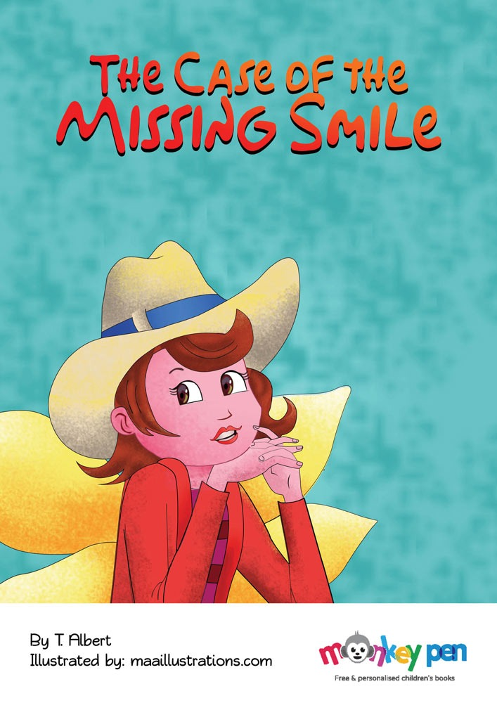
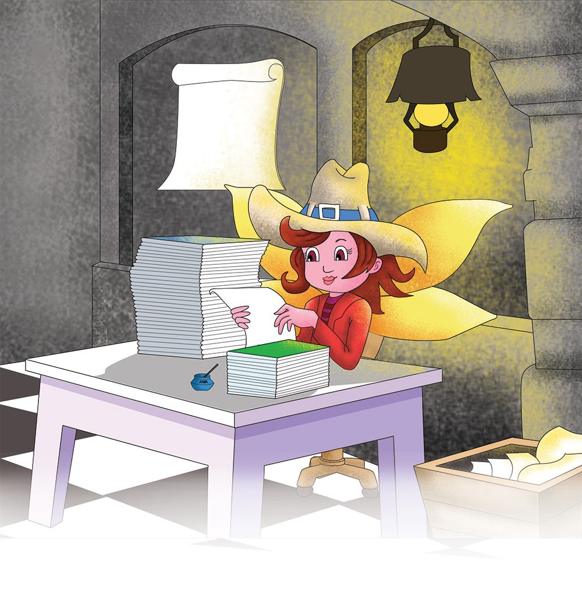
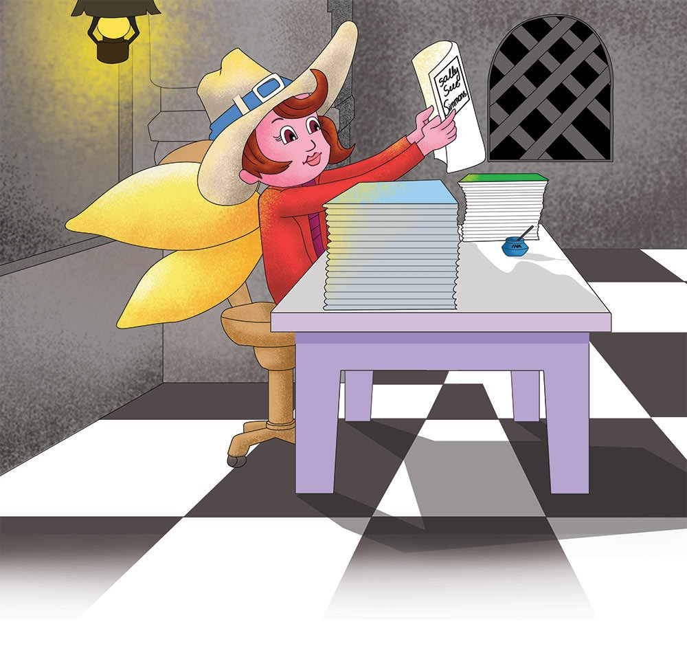
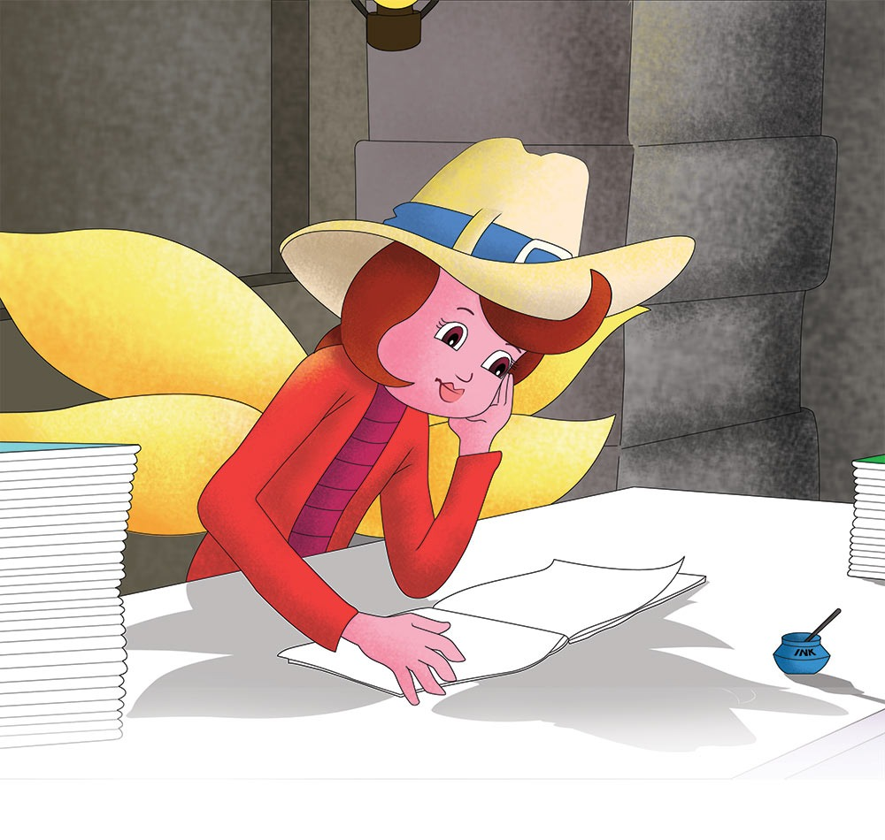
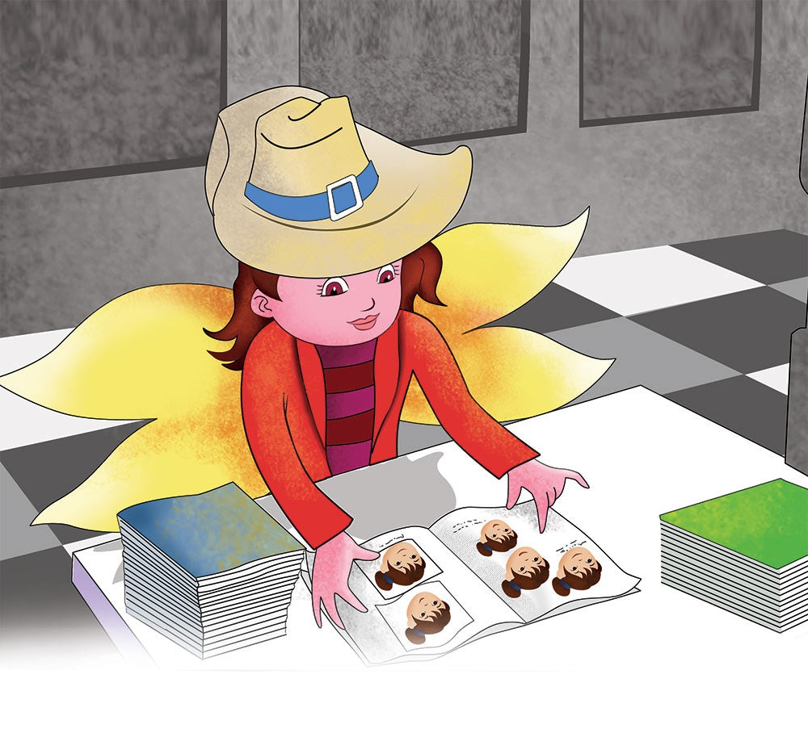

The Case of the Missing Smile


"Now this looks like a very interesting case," Detective Peterson said aloud, as she reviewed the huge stack of reports on her desk.
After several minutes of searching, she found what she was looking for: a folder with the name 'Sophia Sue Simmons'.

"Hmm," Detective Peterson mumbled as she studied the file.

Sophia Sue always smiled, from morning till night. She never stopped smiling.

Thank You
/ 1